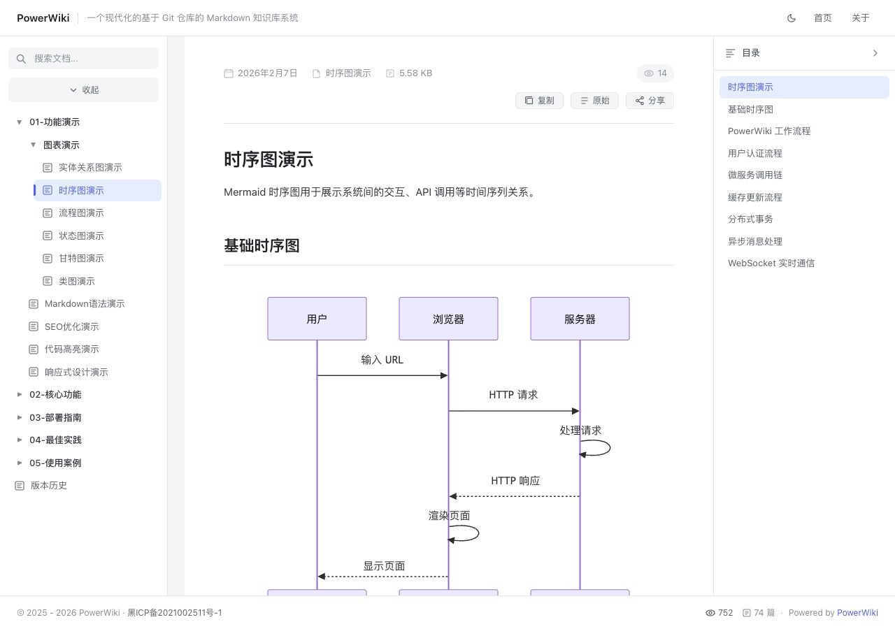

这个文件直接写在 Git 仓库里，后缀是 .html。PowerWiki 会像处理 Markdown 一样把它收录为文章：左侧导航、右侧目录、顶部工具栏、阅读数和分享链接都照常工作。
页面里的
<title>和<meta name="description">会成为文章的标题与描述。
.html 和 .htm 与 .md 一起进入文章列表。<body> 里的正文，忽略页面自带的 <head> 和外壳。style 属性不会进入文章。/01-功能演示/HTML页面演示/基础示例 这类地址会 301 跳到统一的文章地址。右侧目录读取正文中的 h2 / h3 标题。点击下面的小节标题可以体验锚点跳转。
| 访问地址 | 会发生什么 |
|---|---|
/post/01-功能演示/HTML页面演示/基础示例.html |
直接渲染为文章 |
/01-功能演示/HTML页面演示/基础示例 |
301 跳到上面的文章地址 |
/01-功能演示/HTML页面演示/基础示例.html |
同样 301 到统一地址 |
行内代码、Ctrl + C、高亮相对路径的图片会被改写为 /api/image/...，不需要额外的 Markdown 语法：

正文里的相对链接会自动改写成 Wiki 地址：
工具栏的「原始」视图显示的就是这个 HTML 文件本身；「渲染」视图显示清洗后的正文。两种视图可以随时切换。
details / summary 在白名单里，可以正常使用。
提示：直接在浏览器打开这个文件也能看到完整页面，但独立页面里的脚本和样式不会带进 Wiki 文章。